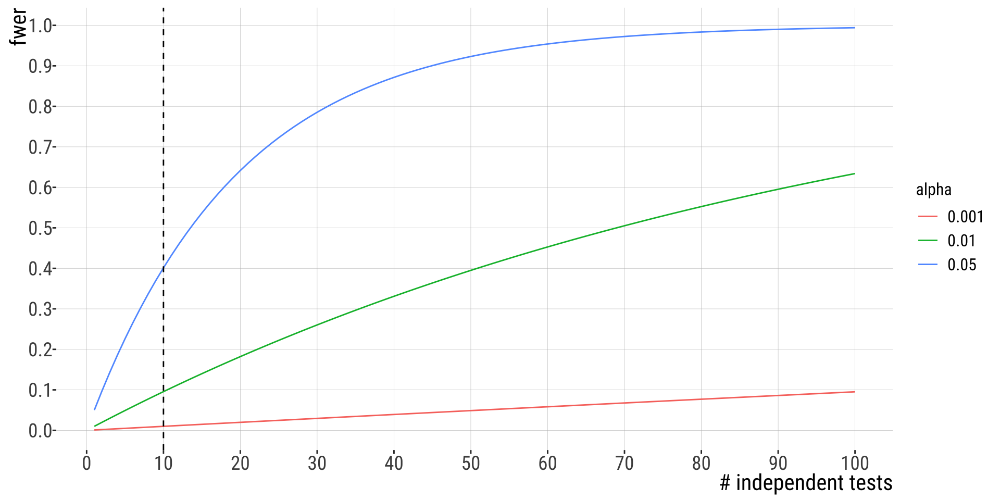
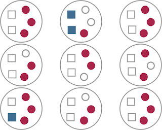
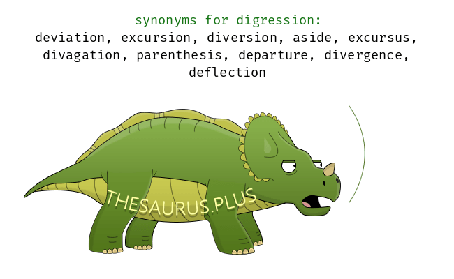
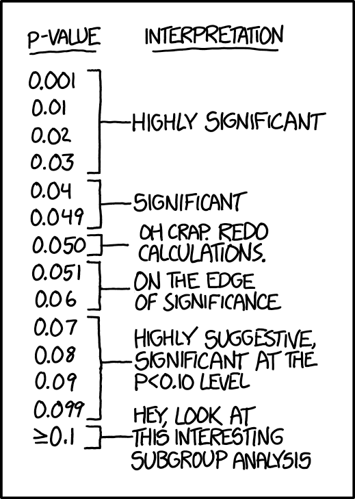

| raw | bonf |
|---|---|
| 0.003851959 | 0.03851959 |
| 0.024194333 | 0.24194333 |
| 0.029557011 | 0.29557011 |
| 0.048374487 | 0.48374487 |
| 0.073136893 | 0.73136893 |
| 0.074473102 | 0.74473102 |
| 0.083334720 | 0.83334720 |
| 0.084656699 | 0.84656699 |
| 0.094838935 | 0.94838935 |
| 0.172720018 | 1.00000000 |
Caution, caveats, digressions
2026-11-11
Readings:
WS Interleaf 8 (data dredging)
WS Interleaf 10 (publication bias)
Posted on Moodle:
Nuzzo, R (2014). Scientific method: Statistical errors. Nature 506, 150–152. https://www.nature.com/articles/506150a
Halsey L al (2015). The fickle P value generates irreproducible results. Nat Methods 12, 179–185. https://doi.org/10.1038/nmeth.3288
In a study, authors searched through a health database of 10 million residents of Ontario, Canada, collecting their reason for admission into a hospital and their astrological sign. They then asked if people with certain astrological signs are more likely to be admitted to the hospital for certain conditions
Result: 72 diseases occurred more frequently in people with one astrological sign than in people with all other astrological signs, and this different was found to be statistically significant
WOW!!!
the probability that at least one of the tests produces a false positive when running 𝑚 tests of hypothesis each with a significance level 𝛼.
\[Pr[>=1\text{false pos.}]= FWER=1-(1-\alpha)^m\]
df <- tibble(alpha = 0.05, N = 1:100) |>
mutate(fwer = (1 - (1 - alpha)^N))
# now do this for a few more alphas:
df <- bind_rows(df, tibble(alpha = 0.01, N = 1:100) |>
mutate(fwer = (1 - (1 - alpha)^N)), tibble(alpha = 0.001,
N = 1:100) |>
mutate(fwer = (1 - (1 - alpha)^N)))
df <- df |>
mutate(alpha = factor(alpha))
# plot
plot1 <- df |>
ggplot(aes(x = N, y = fwer, group = alpha, color = alpha)) +
geom_line(aes(group = alpha)) + scale_x_continuous(n.breaks = 10) +
scale_y_continuous(n.breaks = 10) + xlab("# independent tests") +
geom_vline(aes(xintercept = 10), lty = 2) + theme(legend.title = element_text(size = 12))
plot1
Franklin Delano Roosevelt? No!!!
False Discovery Rate!
Simply put, \(FDR = FP / (FP + TP)\), where \(FP\): false positive; \(TP\): true positive.
It answers this question:
In what fraction of experiments that conclude an effect is statistically significant is the null hypothesis really true?

Each large circle represents a set of tests corrected for family-wise error. Small squares are null effects, small circles are real effects. We have a total of 24 null rejections/significant effects (filled squares and circles), of which 3 are Type I errors (filled blue squares). So \(FDR=3/24=0.125\)
The most widespread (albeit very conservative) is the Bonferroni correction
rescaling of the significance level for a single test, \(\alpha_{1}\)), to account for multiple tests being run simultaneously
\[\alpha_{new}=\frac{\alpha_{orig}}{n}\]
Use FDR correction when:
You perform many hypothesis tests (e.g., genomics).
You want to balance false positives and false negatives.
Bonferroni is too strict, leading to low power.
Do NOT use FDR correction if:
Strict control of any false positives is required (e.g., drug approval studies).
There are only a few tests, in which case Bonferroni is appropriate.
p.adjust() function from base R performs both and also other types of corrections defined by the argument methods.| raw | bonf |
|---|---|
| 0.003851959 | 0.03851959 |
| 0.024194333 | 0.24194333 |
| 0.029557011 | 0.29557011 |
| 0.048374487 | 0.48374487 |
| 0.073136893 | 0.73136893 |
| 0.074473102 | 0.74473102 |
| 0.083334720 | 0.83334720 |
| 0.084656699 | 0.84656699 |
| 0.094838935 | 0.94838935 |
| 0.172720018 | 1.00000000 |
| raw | bonf | bh |
|---|---|---|
| 0.003851959 | 0.03851959 | 0.03851959 |
| 0.024194333 | 0.24194333 | 0.09852337 |
| 0.029557011 | 0.29557011 | 0.09852337 |
| 0.048374487 | 0.48374487 | 0.10537659 |
| 0.073136893 | 0.73136893 | 0.10537659 |
| 0.074473102 | 0.74473102 | 0.10537659 |
| 0.083334720 | 0.83334720 | 0.10537659 |
| 0.084656699 | 0.84656699 | 0.10537659 |
| 0.094838935 | 0.94838935 | 0.10537659 |
| 0.172720018 | 1.00000000 | 0.17272002 |
We have a few options to guard against false negatives that arise from multiple testing.
Do Nothing: If you are simply exploring a data set and do not aim to make statistical statements, you can use P-values to guide further study.
Use the Bonferroni correction: Use a stricter threshold by setting to a new significance threshold to \(\alpha/n\) tests. This approach is too conservative for cases with many hypothesis tests.
Consider FDR: Retain all significant results (at a given α threshold), and then work out the number of such significant results that would arise by chance under \(H_{0}\). You may apply a correction.
Q: Can P values be negative? No. P values are fractions, so they are always between 0.0 and 1.0.
Q: Can a P value equal 1.0? A P value would equal 1.0 only in the rare case in which the treatment effect in your sample precisely equals the one defined by the null hypothesis. When a computer program reports that the P value is 1.0000, it often means that the P value is greater than 0.9999.
Q: Should P values be reported as fractions or percentages? By tradition, P values are always presented as fractions and never as percentages.
Q: Is a one-tailed P value always equal to half the two-tailed P value? Not always. Some sampling distributions are asymmetrical. Even if the distribution is symmetrical (as most are), the one-tailed P value is only equal to half the two-tailed value if you correctly predicted the direction of the difference (correlation, association, etc.) in advance. If the effect actually went in the opposite direction to your prediction, the one-tailed P will be >0.5 and greater than the two-tailed P value.
Next: phylosophical/historical digression about NHST

A reasonable definition of the \(P\)-value is that it measures the strength of evidence against the null hypothesis. However, unless statistical power is very high (>90%), the P value does not do this reliably.
Hot take: Two main things determine if a scientific paper gets published in a respected journal
Quality of the science (good)
“Sexyness” of the findings
papers that reject the null hypothesis are more likely to be published than those that do not
papers that describe large treatment effects are more interesting than those showing smaller effects
| Approach | Questions Answered |
|---|---|
| Confidence Interval | What range of true effect is consistent with the data? |
| P-value | What is strength of the evidence that the true effect is not zero? |
| Hypothesis Test | Is there enough evidence to make a decision based on a conclusion that the effect is not zero? |

“If all else fails use significance at the \(\alpha=0.05\) level and hope no one notices”. https://xkcd.com/1478/
Yes.
The value for which P=0.05, or 1 in 20 … is convenient to take this point as a limit in judging whether a deviation ought to be considered significant or not…”
“If one in twenty does not seem high enough odds, we may … draw the line at one in fifty …, or one in a hundred…. Personally, the writer prefers to set a low standard of significance at the 5 per cent point, and ignore entirely all results which fail to reach this level.”
It is usual and convenient for experimenters to take 5 per cent as a standard level of significance, in the sense that they are prepared to ignore all results which fail to reach this standard, and, by this means, to eliminate from further discussion the greater part of the fluctuations which chance causes have introduced into their experimental results. — R.A Fisher (statistician/eugenicist/geneticist)
Ok, I am exagerating, but you get the point.
1) Absolutists
“Every time you say ‘trending towards significance’, a statistician somewhere trips and falls down.” – someone on twitter
Consider statistics with nuance (e.g. “nearly statistically significant”) a sin
Reject things like declaring a P-value much smaller than 0.05 “highly significant”
Strengths:
Weaknesses
2) Continualists
Consider the job of the P-value is to express the strength of evidence against the null hypothesis
Reasoning: P-values as continuous variables that are prone to sampling error. If strength of evidence is continuous (rather than binary), our inferential conclusions should be too
Report p-values (usually with CIs of sample statistic) and let reader interpret based on their level of skepticism.
Strengths
Sees P-value as subject to sampling error (which it is!)
Recognizes and distinguishes between results that provide weak evidence, moderate evidence, and strong evidence against the null.
Weaknesses
As always, there is a trade-off. Just don’t change strategies after you run your tests.
Chris Merkord’s awesome course website https://chrismerkord.github.io/biol-275/
Martha Smith’s blog: https://web.ma.utexas.edu/users/mks/statmistakes/misinterppvalues.html
Yaniv Branvain and Michael Whitlock’s course materials
https://mike-data-analysis.share.connect.posit.cloud/basic-statistical-inference.html
ABD, by Whitlock and Schluter, 3rd edition
Intuitive Biostatistics, Motulsky, 4th edition
Evolution Institute. https://evolution-institute.org/ronald-fisher-is-not-being-cancelled-but-his-eugenic-advocacy-should-have-consequences/
Bodmer et al. (2021) https://doi.org/10.1038/s41437-020-00394-6
Austin et al. (2006). Testing multiple statistical hypotheses resulted in spurious associations: a study of astrological signs and health. Journal of clinical epidemiology, 59(9), 964-969.
Nuzzo, R (2014). Scientific method: Statistical errors. Nature 506, 150–152. https://www.nature.com/articles/506150a
Halsey L al (2015). The fickle P value generates irreproducible results. Nat Methods 12, 179–185. https://doi.org/10.1038/nmeth.3288
Hoenig and Heisey (2001)The abuse of power: the pervasive fallacy of power calculations for data analysis. The American Statistician, 55(1), 19-24.